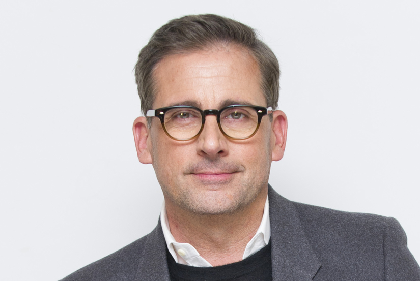

STEVE CARELL
Have you heard of the following moview
Steve Carell is an actor who came into the spotlight in "Anchorman:The Legend of Ron Burgundy". He played the role of weatherman "Brick Tamland" in that movie. Due to his performace in that film he was approached by Judd Apatow. Steve told Judd about the idea of a movie he has been working on. That movie was the 2005 film "The 40-Year Old Virgin". Which made around $109 million in the box office.

He was the youngest of 4 brothers growing up. He came from a family of electrical engineers and Nurses. His father was an electrical engineer and his mother was a psychiatric nurse. Plus his uncle was a scientist building cathode ray tubes.It's a little surprising that Steve became an actor coming from a family background like his.
The hit TV show "The Office" had Steve playing the role of "Michael Scott". He played the maanger of the fake company called "Dunder Mifflin". The show was based in Scranton, Pennsylvania. The show went on to have 9 seasons and lead to Steve winning a golden globe. On top of the golden globe he ended up winning six Primetime Emmmy Award nominations. He ended up leaving the show in 2011 to focus on other projects. During that time Will Ferrel has a run on being the new Michael Scott.
Steve got married in August 5, 1995 to Nancy Carell. Nancy and Steve met in the class that Steve was teaching. Yes, Steve was a teacher of an improvisation class. Fun Fact, Nancy also starred in the TV show "The Office". She played the role of Steve's realtor and girlfriend in the show. She also appeared with Steve in the movie "The 40-Year Old Virgin". She played the sex therapist in the film. Together they brought a general store in Marshfield,Massachusetts.